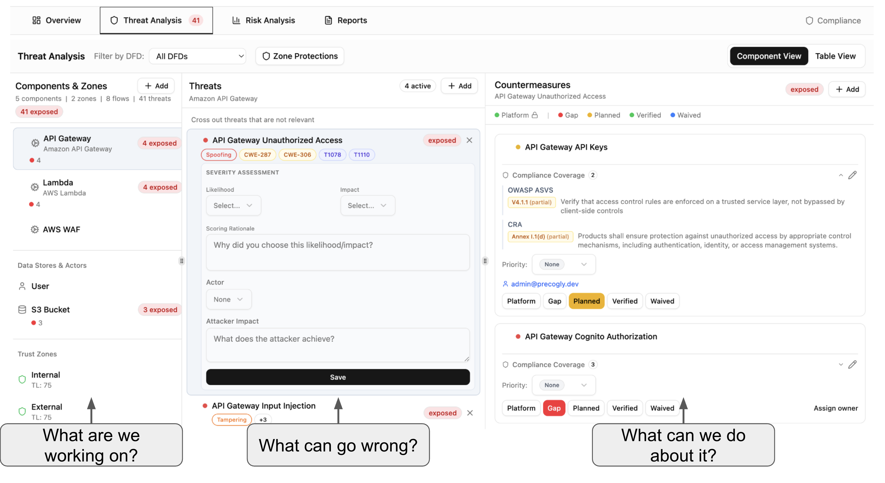
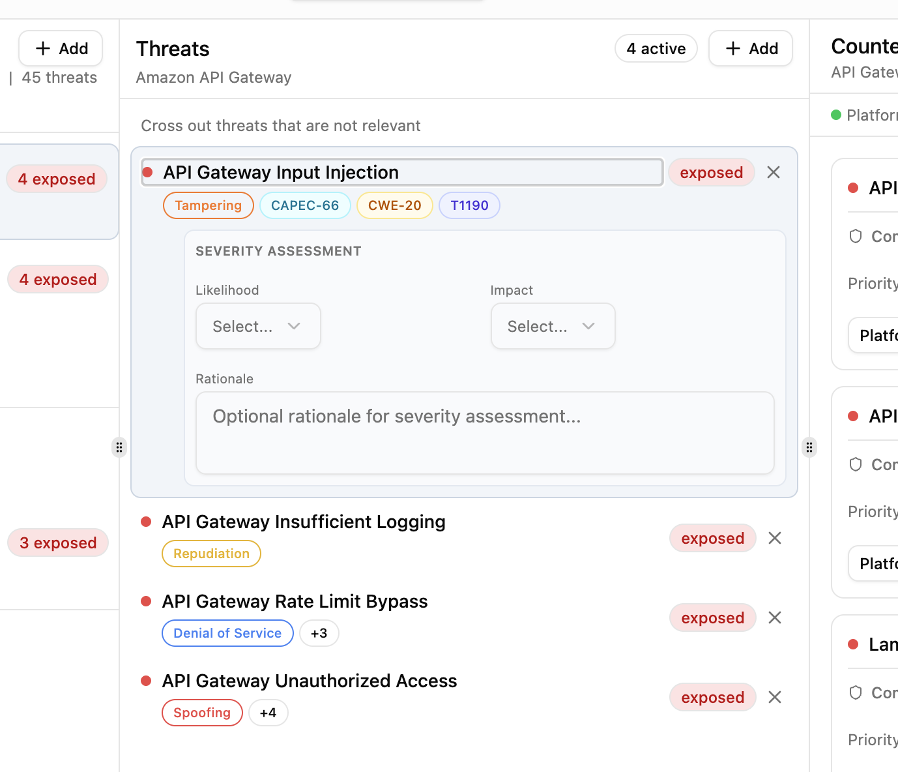
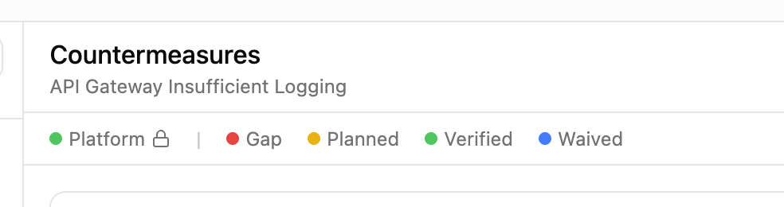
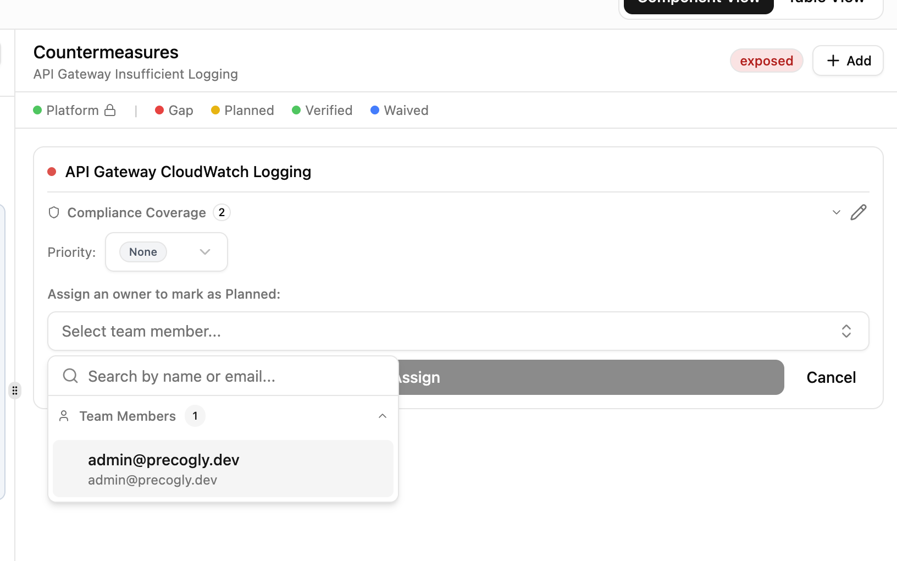
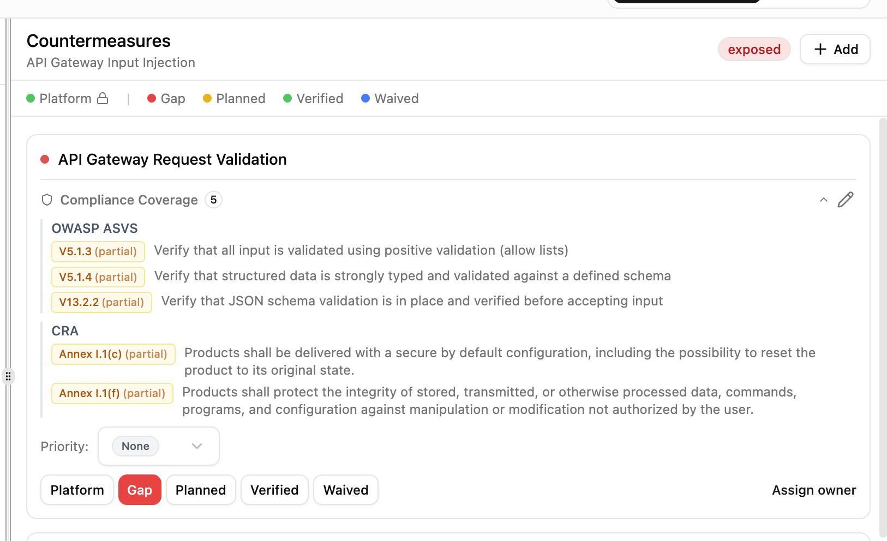

Threat Analysis¶
The threat analysis view is the three-panel workspace where you review targets, assess threats, and track countermeasures. Each panel answers one question: what are we working on?, what can go wrong?, and what can we do about it?

The tree¶
The left panel is a tree of everything a threat can target:
- System, at the top, holds the threats that apply to the whole system and have no targets.
- Zones, nested as on the canvas, each with its components (processes nested inside their parent) and the threats on the zone itself.
- Components that sit in no zone.
- Flows and Boundaries, one group of each per blueprint.
When the model has more than one blueprint the tree gains one level, named after the blueprint. Select any entry to see its threats; zones and boundaries can be selected like components. Table switches to a flat, sortable list with a Targets column, and the search box understands numbers, so T7 finds threat 7.
Three views¶
There are three views. Component View is the tree above. Table View is the flat list. By Use Case starts from what the system is for and has four numbered columns that follow the chain: 1 Use cases, 2 Abuse cases, 3 Threats, 4 Countermeasures. Select a use case to list its abuse cases, an abuse case to list its threats, and a threat to list its countermeasures. An abuse case linked to several use cases shows under each with a shared mark; abuse cases with no use case sit under Not linked to a use case at the bottom of the first column. Each column has its own Add.
A threat is the same row in every view, so an edit in one shows in the others. In By Use Case, select an abuse case and click Add above the threat list: the dialog fills in the abuse case's threat actor and its targets. Gap badges mark use cases without abuse cases and abuse cases without threats; they do not change the completion score. See Use Cases and Abuse Cases.
Numbers¶
Every threat has a number such as T7 and every countermeasure a number such as C3. Numbers are handed out per model, never reused (deleting T4 leaves a gap), and travel with the model through export and import. Use them in tickets, reports, and reviews.
Threats with several targets¶
A threat is one scenario that can sit on several things at once: a component, a flow, a zone, a boundary, or any mix of them. It appears under each of its targets, marked shared, with an Also on line naming the others, and it counts once in every total. Editing its triage, rating, or actor changes the one scenario, so the change shows everywhere at once.
Edit targets adds or removes targets. If you remove the last one, Precogly asks whether to make it a whole-system threat or delete it; a threat never becomes a whole-system threat by accident. When a node or edge is deleted from the diagram and it was a threat's only target, the threat goes with it.
Threats carry taxonomy tags from your imported library packs: STRIDE categories, CAPEC attack patterns, CWE weaknesses, and MITRE ATT&CK techniques, so you can trace each threat back to established frameworks.

Rating a threat¶
A threat's Categories (STRIDE, CAPEC, CWE, ATT&CK and other installed taxonomies) are edited in the threat detail panel and saved as you pick. The categories of the model's methodologies show as one-click chips; More categories searches the rest by id or name. A library threat's own categories are shown locked.
Each threat carries a rating. The UI shows its level as Severity, how bad it is if the threat happens: info, low, medium, high, or critical (the TM-BOM file calls it the rating's level). The same rating form is used for threats and risks:
| Method | What you enter | What you get |
|---|---|---|
| Qualitative matrix | Likelihood and impact on a five-step scale | A score from 1 to 25 and its level (1 to 2 info, 3 to 6 low, 7 to 12 medium, 13 to 19 high, 20 to 25 critical) |
| OWASP Risk Rating | The sixteen OWASP factors, in four groups | Likelihood and impact out of 9, and the level from the OWASP matrix |
| Manual level | A level, with no likelihood or impact | That level |
Threats are rated with the matrix or a manual level. Risks use the scoring method chosen for the model (qualitative matrix or OWASP Risk Rating; FAIR and Mozilla RRA are listed but not available yet), and the method cannot be changed while the model has risks. The server computes the score and level; the score is always shown with its scale, so 16 / 25 is never confused with 5.75 / 9. Under Advanced the form takes impact categories (including safety), an estimated loss with currency, and a minimum to maximum range. A threat has one rating; residual risk lives on risks only.
Actor and objectives¶
A threat has one threat actor: one of the model's threat actors, free text, or none. The picker lists the model's threat actors, then the common threat actors (State Actor, Hacktivist, Insider Threat, Competitor, Opportunist, Organized Crime). Picking a common one adds it to the model's threat actors, so it is a record you can reuse and edit, and it exports with its CycloneDX archetype. An abuse case picks its threat actor from the same list, without free text. Manage threat actors creates and edits them (name, description, person or system, malicious intent, skill level, motivation, resources, objectives) and says how many threats use each one. In the exported file a threat actor is a CycloneDX persona.
Once the model has at least one business objective, a picker lets you say which objectives a threat puts at risk. Threat sources says where a threat comes from, using the four NIST SP 800-30 sources: adversarial, accidental, structural, and environmental. Tick any that apply in the threat's detail panel. Intent and access level are shown read-only when an import set them.
A threat's detail panel shows From abuse cases when abuse cases lead to it. Each name is a link that opens the By Use Case view with that abuse case selected.
Countermeasures¶
Each countermeasure moves through a lifecycle: Gap (not yet addressed), Planned (assigned to an owner), In Progress (implementation underway), Implemented (deployed, not yet verified), Verified (confirmed by security team), Platform (provided by infrastructure), Waived (accepted risk), or Decommissioned (no longer active).

A countermeasure card shows its number, its status, the threats it is linked to by number, and an Also mitigates line with one entry per other threat and that threat's targets. Applies to is the control's scope: the components, flows, zones, and boundaries it covers, or the whole system when empty. Under Advanced sit the effectiveness (a percentage, or "not assessed"), Implemented by (components and another party as text), and Source. Scope and provider are recorded and exported; they do not change any threat's status. A countermeasure counts for a threat only when it is linked to that threat. See Platform Controls.
Assign a team member as owner to move a countermeasure from Gap to Planned. Set priority and track progress across your team.

Countermeasures can be mapped to compliance framework requirements. Expand the compliance coverage section to see which standards a countermeasure satisfies and whether coverage is full or partial.

Controls not linked to any threat¶
A countermeasure that loses its last threat link is kept, unless it was generated from the library and nobody has touched it since. Such controls are listed under Controls not linked to any threat, each with Link to threat and Delete (which says what would go with it: evidence, tests, comments, compliance mappings). They are left out of gap counts, threat status, and completion status, and still counted in required-for-release and compliance figures.
Library threats¶
Library threats are added when a node or flow is first placed, when a technology or flow type changes, or when a flow is reconnected, never on an ordinary save. A library threat you deleted stays deleted; add it back from the library with + Add in the Threats column. A pack upgrade changes nothing in any model: threats it adds reach a component or flow only when that target's technology or flow type changes, or when you add them with + Add.
After a technology or flow type change, a library threat that no longer applies is removed if nobody has edited it. An edited one stays, with the note "The library no longer lists this threat here. It was kept because it has been edited."
Threat triage¶
Each threat carries a triage status that records the team's risk treatment decision:
| Status | Meaning | Effect |
|---|---|---|
| Open | Not yet reviewed | Active. Counted in the STRIDE summary and threat counts. |
| Mitigate | Will be addressed with countermeasures | Active. Counted in the STRIDE summary and threat counts. |
| Accept | Risk is tolerable as-is | Triaged out. Excluded from active analysis. |
| Delegate | Risk ownership transferred to another party | Triaged out. Excluded from active analysis. |
| Eliminate | Threat source removed from the design | Triaged out. Excluded from active analysis. |
Open and Mitigate are active statuses: threats with these statuses appear in the STRIDE summary, contribute to risk scores, and show in the main threat analysis view.
Accept, Delegate, and Eliminate are triaged-out statuses. When you triage a threat, you must provide a decision rationale explaining why. Triaged threats move to the Triaged Threats section of reports and are excluded from active threat counts, but remain visible for audit purposes.